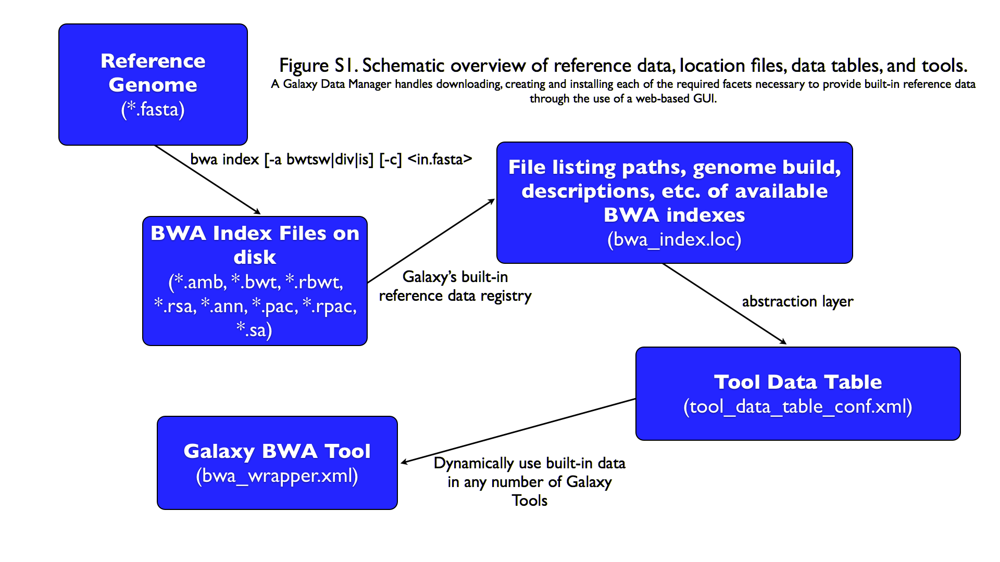
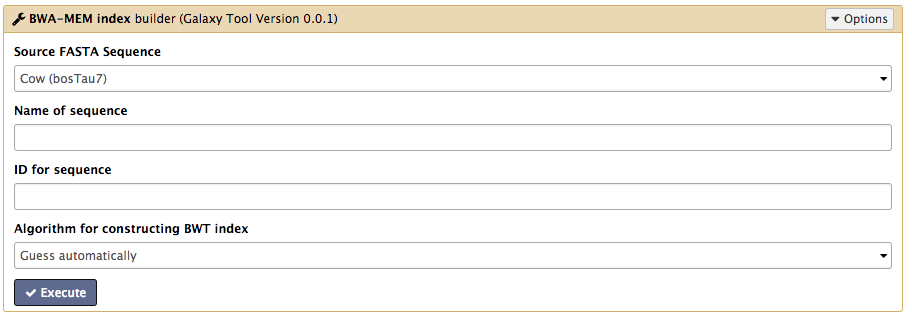
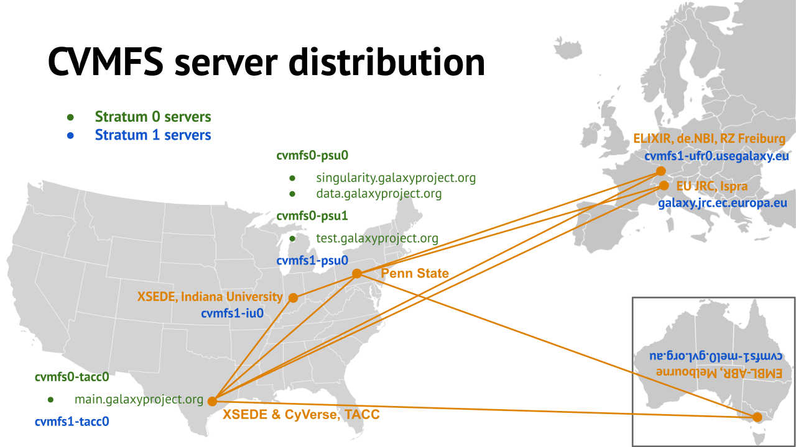

Reference Genomes in Galaxy
Contributors
Overview
.large[
- Intro to built in datasets
- Built in data hierarchy
- Some problems
- Data Managers
- There’s just so much of it! ]
Built in Data
Data, what data?
.large[
- Some genomes are large! Human, Mouse, Coral
- Some tools require indices of the genomes.
- The indices take a long time to build!
- Better to pre-build the indices. ]
Overview
.large[
- Intro to built in datasets
- Built in data hierarchy
- Some problems
- Data Managers
- There’s just so much of it! ]
Data schematics in Galaxy

Using reference data in a tool
bwa.xml
<conditional name="reference_source">
<param name="reference_source_selector" type="select" label="Will you select a reference genome from your history or use a built-in index?" help="Built-ins were indexed using default options. See 'Indexes' section of help below">
<option value="cached">Use a built-in genome index</option>
<option value="history">Use a genome from history and build index</option>
</param>
<when value="cached">
<param name="ref_file" type="select" label="Using reference genome" help="Select genome from the list">
<options from_data_table="bwa_mem_indexes">
<filter type="sort_by" column="2" />
<validator type="no_options" message="No indexes are available" />
</options>
<validator type="no_options" message="A built-in reference genome is not available for the build associated with the selected input file"/>
</param>
</when>
<when value="history">
Where are the data tables?
tool_data_table_conf.xml
(Usually located in galaxy/config/)
<tables>
<!-- Locations of indexes in the BWA mapper format -->
<table name="bwa_mem_indexes" comment_char="#" allow_duplicate_entries="False">
<columns>value, dbkey, name, path</columns>
<file path="tool-data/bwa_index.loc" />
</table>
</tables>
“loc” files - Short for location!
bwa_index.loc
#
#<unique_build_id> <dbkey> <display_name> <file_path>
#
bosTau7 bosTau7 Cow (bosTau7) /genomes/bosTau7/bwa_mem_index/bosTau7/bosTau7.fa
ce10 ce10 C. elegans (ce10) /genomes/ce10/bwa_mem_index/ce10/ce10.fa
danRer7 danRer7 Zebrafish (danRer7) /genomes/danRer7/bwa_mem_index/danRer7/danRer7.fa
dm3 dm3 D. melanogaster Apr. 2006 (BDGP R5/dm3) (dm3) /genomes/dm3/bwa_mem_index/dm3/dm3.fa
hg19 hg19 Human (hg19) /genomes/hg19/bwa_mem_index/hg19/hg19.fa
hg38 hg38 Human (hg38) /genomes/hg38/bwa_mem_index/hg38/hg38.fa
mm10 mm10 Mouse (mm10) /genomes/mm10/bwa_mem_index/mm10/mm10.fa
Overview
.large[
- Intro to built in datasets
- Built in data hierarchy
- Some problems
- Data Managers
- There’s just so much of it! ]
Some Problems!
.large[
- Time consuming!
- ~30 minutes work just to add a new genome to 1 tool!
- Administrator needs to know:
- how to index every tool
- expected format of the reference data
- format of the .loc file ]
Typical conversation
Hi, We have a local install of galaxy andI’m trying to add the reference index files for bwa using the information provided in the following link:
…
I have modified the bwa_index.loc file present in the ../tool-data directory by adding the path to where the index is on our server (Also attached). However, even after restarting the server, the ference genome does not show when choosing the “use a built in index option”. I’m not sure whether the loc file is correctly created, and whether any other configuration file needs to be changed/updated. Help in the matter greatly appreciated
Thanks, Aarti
Typical conversation
Hi Aarti, Check the name of your rf file. If it is hg19.fa, then modified the loc file as “hg19 hg19 HG19_BWA /root/Ref_INDEX/HG19BWAIndex/base/hg19.fa”
Avik Datta
Typical conversation
Also make sure you are using TABs to separate the fields in the .loc file, this has bitten me several times in the past. My vim config places 4 spaces instead of TAB, to deactivate this optin you can do “:set noexpandtab”
Hope it helps, Carlos
Typical conversation
Hello Carlos, Thanks a lot for the tip. The tab trick has fixed the problem.
Regards, Aarti
Other concerns
.large[
- Accessible?
- Manually download genome FASTA files
- Download, compile, run bwa index; which options?
- Reproducible?
- Only if the person performing manual steps keeps good notes
- Transparent?
- Send email to sysadmin asking for notes
- Restart Galaxy server for new entries ]
Overview
.large[
- Intro to built in datasets
- Built in data hierarchy
- Some problems
- Data Managers
- There’s just so much of it! ]
Data Managers
.large[
- Allows for the creation of built-in (reference) data
- underlying data
- data tables
- *.loc files
-
Specialized Galaxy tools that can only be accessed by an admin
- Defined locally or installed from ToolShed ]
Data Managers
.large[
- Flexible framework
- Not just genomic data
- Run Data Managers through UI
- Workflow compatible
- API
- Examples
- Adding new genome builds (dbkeys)
- Fetching genome (fasta) sequences
- Building short read mapper indices for genomes ]
Special class of Galaxy tool
Looks just like a normal Galaxy tool!

What does it do?
The output of the data manager is a JSON description of the new data table entry
This gets turned into a new data table entry
The index files themselves get placed in the appropriate location.
Data Managers Admin
.large[
- Located on the Galaxy’s Admin Tab under Local Data
]

Data Managers Admin
.large[
- UI tools to fetch reference genomes/build indices
- View progress of index build jobs
- View contents of tool data tables ]
Resources / further reading
.large[
- Galaxy Wiki Page on Data Managers
- Details
- Building
- Examples
https://galaxyproject.org/admin/tools/data-managers/ ]
Exercise Time!
Overview
.large[
- Intro to built in datasets
- Built in data hierarchy
- Some problems
- Data Managers
- There’s just so much of it! ]
There’s a lot of reference data
.large[
(and it’s hard to keep up with)
]

CernVM-FS to the rescue
- Needed a method of sharing reference data across country efficiently
- CVMFS is an efficient method for read only data sharing between systems
- Originally designed for distributed software installation at Cern
- Turns out it’s really useful for read only data sets as well
- HTTP-based, firewall friendly
- All nodes of Galaxy Main get their reference genomes and indices from CVMFS
- Shared via mirroring and caching across the country
- It’s also really useful to share data globally
- The usegalaxy.* initiative has taken full advantage of this.
.widen_image[  ]
CVM-FS Global Structure
.widen_image[
 ]
]
Exercise #2:
.large[ Connect our instances to CVMFS for reference data ]
Thank you!
This material is the result of a collaborative work. Thanks to the Galaxy Training Network and all the contributors! Tutorial Content is licensed under
Creative Commons Attribution 4.0 International License.
Tutorial Content is licensed under
Creative Commons Attribution 4.0 International License.